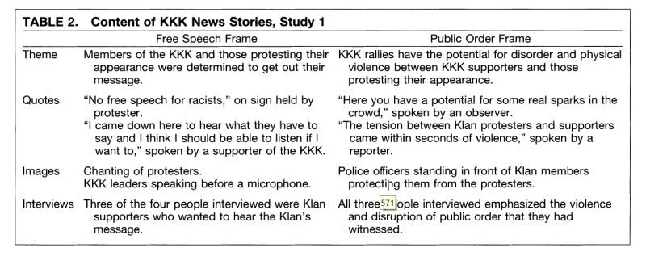
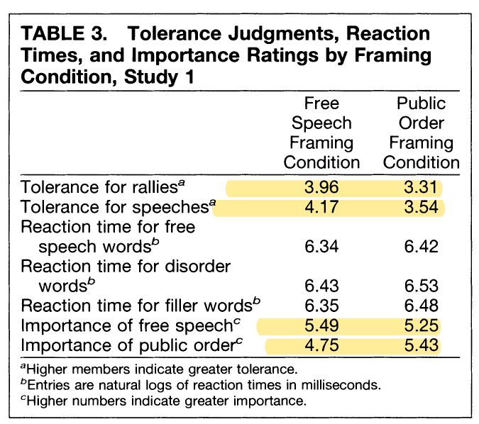
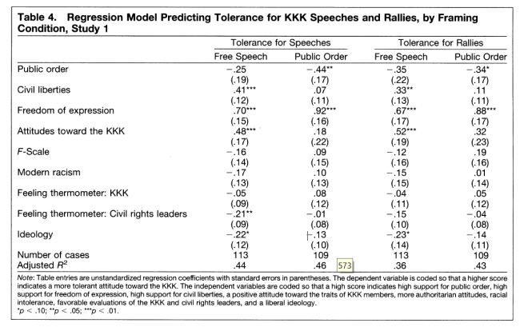
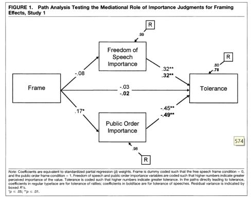

收录于合集
#比较政治学 121 个
#政治传播 12 个
文献来源： Nelson, Thomas E., R. A. Clawson, and Z. M. Oxley. “Media Framing of a Civil Liberties Conflict and Its Effect on Tolerance.” American Political Science Review 91.3(1997):567-583.
原文作者： Tomas E. Nelson，俄亥俄州立大学政治学教授；Rosalee A. Clawson，普渡大学政治学教授；Zoe M. Oxley，美国联合学院政治学教授。三位作者均关注政治心理学与公共舆论研究。
李普曼曾悲观地认为，我们所处的政治世界看不见、摸不着也想不到。在这个信息技术和传播媒体高度发达的时代，政治似乎离我们越来越近了。然而，越来越多的证据表明，新时代的公共舆论并没有带来足够的共识、理解和信任，反而将民意推向无止境的暴戾和纷争，而新兴媒体也总是成为“带节奏”的恶人。
过去我们渴望真相，而现在我们总是期待反转。
事实上，媒体很少会直接撒谎，但受众看到的都是被精心组织的真相。针对相同事实不同侧面的不同陈述方式，会将某一事件的定性、归因和评价引向完全不同的归宿。在政治学、心理学和传播学界，这一现象被称之为“框架效应”。今天，我们就一起学习一篇经典文献，了解“带节奏”的真相。
一、“带节奏”的心理学基础
毫无疑问，媒体接触会实时地影响人们的政治态度，但这一过程并不像我们想象的那么简单。
学者一度以为，媒体对受众的影响仅限于提供事实，而受众态度的改变则不过是因为得到了新的信息，因此这本质上是一种“学习”的过程。然而，不同媒体对相同事件的报道却经常导致冲突严重的多种舆论，而事实之外的态度和观点也正是当代媒体的卖点。因此这一理论并不符合实际。
另一种观点认为，我们的大脑中本来就有很多相对稳定的政治倾向和道德标准，而媒体的作用不过是“启动”它们。换言之，当携带特定态度的信息被送到受众眼前时，其大脑中的相关观念也被激活。而当他们做出实时判断的时候，刚刚被“启动”的观念就会主导我们的选择。这种观点看上去较为科学，但却忽视了一个重要的事实：我们大脑中的既有观念不是等价的。即使我们反复去启动某一个权重较轻的观念，其产生的影响也不一定能比得上一个未被启动的、权重非常大的观念。
因此，第三种理论应运而生，也就是今天的主角——框架及框架效应理论。该理论认为，信息影响受众态度的重要原因并不在于提供的新的事实，也不在于裹挟和启动了特定的观念。真正起作用的机制在于媒体将具体议题抽象和化简为少数几个侧面，通过强调具体的价值、事实或者其他考量，赋予它们与议题更大的相关性。换言之，媒体通过被“框架化”的信息，改变了人们做出判断时不同观念所占的权重，最终改变了人们的政治态度，“框架效应”也就发生了。
举例而言，在对同一个突发事件的报道上，媒体可能仅仅将其视为社会生活中的插曲，也可能将其上升到时代主题的高度。这两种框架对人们的政治态度就会产生不同的影响。同理，某一项公共工程既可以被放入“经济发展”的框架，也可以被框架化为“环境保护”的议题。一个更为常见的争论在于，部分媒体会将摆脱贫困和个人奋斗联系在一起，但另一部分媒体则往往着重于强调社会福利和国家政策。
二、针对3K党事件的研究设计
3K党等针对特定人群的仇恨团体长期困扰着美国政治，也引起了公共舆论的广泛争议。一方面，根据宪法修正案的规定与精神，人们拥有发表任何言论的自由。因此，只要3K党的演讲、集会和游行不触犯其他法律，行政机关和司法机关都对其束手无策。另一方面，这些仇恨团体的言行又直接违背了平等、包容的美国精神，也对公共秩序和民众生活产生了影响。
本文作者认为，媒体对这一事件的报道就明显蕴含着两种截然不同的框架，并且会造成相反的政治后果。作者假设，如果从“言论自由”的角度传播这一事件，受众就很可能倾向于对3k党保持宽容；而如果将这一事件放入“公共秩序”的框架，受众则很可能倾向于取缔3k党的活动。这背后的机制在于媒体中的框架实时地改变了人们在判断时大脑中不同观念的权重。
对此，作者设计了两项实验。在第一项实验中，被试被随机分成两组，分别观看了包含上述两种框架的电视节目，随后被要求填答与政治态度有关的问卷。与此同时，被试被要求进行电脑拼字游戏。作者通过他们拼字的速度来检验包含特定关键词的观念是否被启动（“放在头顶”）。在第二项实验中，真实的电视节目被替换为人工编造但看上去颇为合理的信息内容，作者在两组收到的信息中放入了更为明显的框架。
三、框架效应的实证检验
两项实验均很好地支持了作者的假设。受到“言论自由”框架刺激的被试更倾向于宽容3K党，受到“公共秩序”框架刺激的被试则表现得更不宽容。在具体事件之外，两组在宽泛的政治态度（如“言论自由”或“公共秩序的”的重要性）方面也产生了差异。更为有趣的是，在每组内部，态度差异的来源也不尽相同（详见下图分组回归表格）。然而，不同组在拼字游戏中的表现差别不大。
综上，实验的结果说明。包含不同框架的信息既改变了人们对具体事件的看法，也改变了不同观念的权重，甚至在一定程度上改变了政治态度生成的心理机制。作为对竞争性假设的回应，本项研究没有发现信息激活观念的证据。因此人们似乎并不会直接根据“放在头顶”的观念行事，政治态度确实源于不同观念之间的权衡。




注： 为了方便读者阅读和理解，小编对原文做了较大的删节和改动，需要直接引用或深入学习的朋友请点击“阅读原文”。 在此特别鸣谢中国人民大学“政治传播与政治心理”读书会。
推荐阅读：
Chong, Dennis, and J. N. Druckman. “Framing Theory.” Annual Review of Political Science 10.1(2007).
马得勇. 政治传播中的框架效应——国外研究现状及其对中国的启示[J]. 政治学研究, 2016(4):58-70.
马得勇, 兰晓航. 精英框架对大学生有影响吗——以实验为基础的实证分析[J]. 清华大学学报:哲学社会科学版, 2016(3):160-171.
编译：陆屹洲
编辑：吴温泉
审读：杨端程


政文观止
微信扫一扫赞赏作者 __赞赏
已喜欢，对作者说句悄悄话
取消 __
发送给作者
发送
最多40字，当前共字
上一页 1/3 下一页
长按二维码向我转账
受苹果公司新规定影响，微信 iOS 版的赞赏功能被关闭，可通过二维码转账支持公众号。